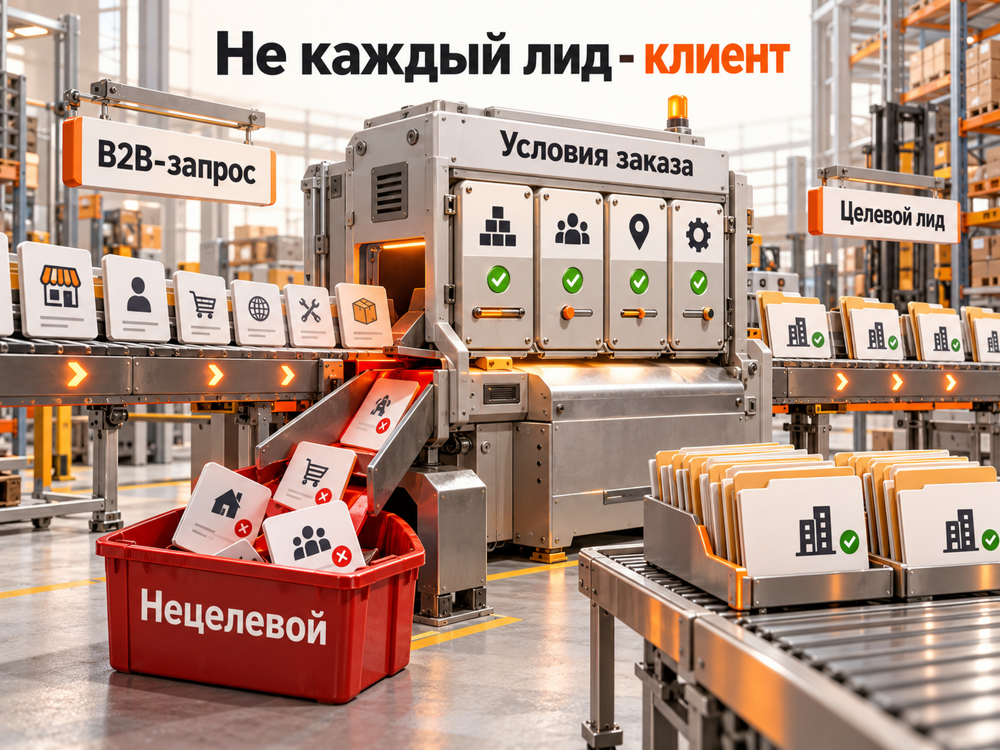

Блог о платном трафике
Реклама B2B-компании: как привлекать клиентов и считать результат
Рекламу B2B-компании нужно строить вокруг конкретного покупателя, его задачи и экономики сделки. Если клиенты уже ищут поставщика или подрядчика, обычно стоит начинать с поисковой рекламы. Если прямого спроса мало, тестировать РСЯ и другие способы привлечения аудитории. А результат оценивать не только по количеству заявок, но и по их качеству, коммерческим предложениям и заключённым договорам.
В B2B одна сделка может согласовываться несколько месяцев. Поэтому дешёвые лиды не всегда означают эффективную рекламу, а небольшое количество дорогих обращений может приносить компании стабильную прибыль.
Я обычно начинаю с трёх вопросов: кто принимает решение о покупке, какие запросы используют потенциальные клиенты и сколько бизнес может потратить на привлечение нового заказчика.
Чем B2B-реклама отличается от обычной рекламы услуг
Главное отличие B2B-рекламы в том, что решение о покупке часто принимает не один человек, а несколько сотрудников компании. При этом важно не просто заинтересовать потенциального покупателя, но и подтвердить, что продукт соответствует его требованиям.
Особенности B2B-рекламы:
- Небольшая целевая аудитория по сравнению с массовыми потребительскими товарами.
- Длинный цикл сделки с переговорами и согласованиями.
- Несколько участников принятия решения.
- Высокая стоимость отдельного заказа.
- Технически сложные продукты и услуги.
- Разные требования к поставщикам у отдельных клиентов.
- Необходимость отделять перспективные обращения от нецелевых.
Например, инженер ищет оборудование по техническим характеристикам, закупщик сравнивает условия поставки, а руководитель оценивает стоимость владения и риски.
Поэтому одинаковая реклама не всегда подходит всем участникам сделки.
Главный показатель B2B-рекламы не количество полученных контактов, а число потенциальных клиентов, которые действительно соответствуют условиям бизнеса и могут заключить договор.
Как определить целевую аудиторию и отделить B2B-спрос
Перед запуском рекламы нужно разделить потенциальных покупателей по продукту, характеру потребности и условиям заказа.
Если компания одновременно продаёт промышленное оборудование, оказывает услуги его обслуживания и поставляет запчасти, это три разных сценария покупки.
Для каждого направления могут отличаться запросы, рекламные объявления, посадочные страницы и допустимая стоимость привлечения.
Какие запросы использовать в B2B-рекламе
| Тип спроса | Пример запроса | Подход |
|---|---|---|
| Прямой коммерческий | Купить промышленный шредер | Приоритет для Поиска |
| Поиск поставщика | Поставщик промышленного оборудования | Поиск с конкретным предложением |
| Поиск услуги | Производство одежды на заказ оптом | Отдельная рекламная группа и релевантная страница |
| Проблемный спрос | Оборудование для переработки отходов | Проверка коммерческого намерения, тест |
| Информационный | Как работает промышленный шредер | Экспертный контент, SEO, при необходимости ретаргетинг |
| Нецелевой спрос | Бытовой измельчитель для кухни | Исключение нерелевантных запросов |
Эти примеры показывают разницу намерений, а не гарантируют наличие спроса или одинаковую эффективность запросов в каждой нише.
Частая ошибка в B2B заключается в том, что специалист видит тематический запрос и автоматически считает его целевым.
Но человек может искать оборудование для личного использования, готовить дипломную работу или собирать общую информацию без намерения покупать.
Поэтому при сборе семантики я проверяю не только соответствие продукта запросу, но и вероятность коммерческого обращения.
Как заранее отсеять неподходящие заявки
В объявлениях и на посадочных страницах полезно указывать существенные условия сотрудничества:
- Минимальная партия или объём заказа.
- Оптовый или корпоративный формат работы.
- География поставок и обслуживания.
- Типы клиентов, для которых предназначена услуга.
- Технические ограничения.
- Условия подготовки коммерческого предложения.
Например, если фабрика принимает заказы на пошив от 150 единиц, это стоит обозначить до отправки формы, а не выяснять после разговора с менеджером.
Подобное разделение применялось в моём кейсе фабрики детской одежды. Для пошива под заказ и продажи готовой продукции оптом использовались отдельные посадочные страницы.
Сегментация помогает снизить долю нецелевых обращений ещё до того, как потенциальный клиент связался с компанией.

Какие каналы рекламы подходят B2B-компании
Выбирать рекламные каналы нужно по наличию сформированного спроса, поведению покупателей и длительности сделки. Универсального набора инструментов для всех B2B-компаний нет.
| Канал | Когда использовать | Основное ограничение |
|---|---|---|
| Поиск Яндекса | Клиент уже ищет продукт, услугу или поставщика | Ограниченный объём целевых запросов |
| РСЯ | Нужно расширить охват за пределы прямых поисковых запросов | Возможны многочисленные нецелевые обращения |
| Ретаргетинг | Покупатели долго сравнивают предложения | Нужна подходящая аудитория для повторных показов |
| SEO | Есть устойчивый коммерческий и информационный спрос | Результат требует времени |
| Отраслевые площадки | Покупатели выбирают поставщиков в специализированных каталогах | Работают не в каждой отрасли |
Канал выбирают по поведению потенциального покупателя, а не по привычке рекламодателя.
Поисковая реклама для сформированного спроса
Поиск Яндекса обычно становится первым кандидатом для B2B-компании, если покупатели уже знают, что им требуется.
Это могут быть запросы на закупку оборудования, поиск подрядчика, изготовление продукции, обслуживание техники или профессиональные услуги.
Главное преимущество Поиска - возможность показать предложение человеку непосредственно в момент поиска решения.
Однако в узких B2B-нишах количество коммерческих запросов ограничено. Увеличение бюджета не создаст новые поисковые запросы.
В моём кейсе организации швейного производства основной результат давал Поиск.
За период с 14 марта по 13 апреля 2023 года поисковые кампании принесли 29 заявок по 1970 рублей. Всего реклама дала 39 обращений при расходе 91 168 рублей.
Этот результат относится к конкретному историческому проекту, а не является актуальной средней стоимостью B2B-заявки.
РСЯ для расширения аудитории
Рекламная сеть Яндекса подходит для тестирования спроса, который сложно собрать только по прямым поисковым запросам.
Например, потенциальный клиент может нуждаться в сложной услуге, но не знать её профессионального названия.
В РСЯ можно работать с тематическими интересами, поведением пользователей, сегментами Метрики и повторными рекламными контактами.
В кейсе выкупа акций с высоким чеком прямого поискового спроса было мало.
Основной объём обращений приносили РСЯ и Мастер кампаний. С учётом дополнительных контактов реальная стоимость обращения составляла около 2500 рублей.
Проект относится к 2022 году и показывает конкретный пример работы с ограниченным поисковым спросом, а не универсальный ориентир для современных B2B-компаний.
Когда РСЯ не нужна
Если потенциальный покупатель обращается только при возникновении конкретной профессиональной задачи, поисковой рекламы может оказаться достаточно.
В моём кейсе юридического консалтинга около 99% лидов поступало с Поиска.
Для этого проекта расширение охвата через РСЯ не давало сопоставимого результата.
Вывод: РСЯ стоит добавлять не потому, что она существует, а когда есть конкретная гипотеза расширения спроса и возможность проверить качество полученных заявок.
Ретаргетинг и повторные касания
В B2B потенциальный клиент может изучить предложение, обсудить его внутри компании и вернуться спустя некоторое время.
Ретаргетинг позволяет повторно обратиться к посетителям сайта, если для этого есть подходящие аудитории.
Особенно интересны посетители, которые:
- Изучали страницу конкретной услуги.
- Смотрели технические характеристики.
- Читали кейсы и примеры выполненных проектов.
- Начали заполнять форму, но не отправили её.
При этом повторная реклама должна учитывать, что человек уже знаком с предложением. Показывать одно и то же первоначальное объявление не всегда полезно.
Как подготовить сайт для B2B-рекламы
Посадочная страница B2B-компании должна отвечать на конкретную потребность покупателя, а не просто рассказывать историю бизнеса.
Корпоративные сайты часто содержат множество направлений, общие сведения о компании и каталог услуг. Но человеку, пришедшему по коммерческому запросу, нужен быстрый ответ на свою задачу.
На странице стоит показать:
- Что именно предлагает компания.
- Для каких отраслей и типов клиентов предназначен продукт.
- Основные характеристики и ограничения.
- Условия сотрудничества, поставки или выполнения работ.
- Кейсы, документы и подтверждения опыта.
- Как получить расчёт стоимости или коммерческое предложение.
Для сложного промышленного продукта особенно важны технические характеристики, документация и возможность уточнить конфигурацию.
Для оптового поставщика - ассортимент, минимальная партия и условия поставки.
Для консалтинговой компании - конкретные задачи, квалификация специалистов и примеры результатов.
Нужны ли отдельные страницы под разные услуги
Отдельные посадочные страницы оправданы, если существенно различаются продукты, аудитория или предложение.
Например, пошив одежды под собственным брендом и закупка готовых коллекций оптом решают разные задачи.
Но не нужно создавать несколько практически одинаковых лендингов только ради отдельных ключевых фраз.
Главный критерий простой: отдельная страница должна лучше отвечать на потребность покупателя.
Как оценивать эффективность B2B-рекламы
Эффективность B2B-рекламы нужно оценивать по нескольким этапам воронки: от обращения до квалификации, коммерческого предложения и заключённой сделки.
При длинном цикле продаж ориентироваться только на CTR или стоимость заявки опасно.
Я обычно разделяю показатели на три группы.
| Уровень | Показатели | Что показывают |
|---|---|---|
| Реклама | Клики, CTR, CPC, расход | Насколько эффективно покупается трафик |
| Качество обращений | CPL, стоимость квалифицированного лида, доля целевых заявок | Привлекает ли реклама подходящих покупателей |
| Бизнес-результат | Сделки, стоимость привлечения клиента, выручка, маржа | Окупается ли привлечение |
Что считать квалифицированным B2B-лидом
Квалифицированный лид - обращение потенциального покупателя, который соответствует заранее согласованным критериям бизнеса.
Например:
- Клиент относится к нужной отрасли.
- Компания работает в подходящем регионе.
- Требуемый объём заказа соответствует условиям поставщика.
- Продукт действительно решает задачу покупателя.
- Есть реальная потребность и возможность обсуждать заказ.
Не каждое квалифицированное обращение обязательно заканчивается продажей.
Но оно должно быть потенциально перспективным, чтобы отдел продаж мог продолжить работу.
Какие показатели считать основными
CPL (Cost per Lead) - стоимость одного обращения.
CPL = рекламные расходы / количество лидов.
Стоимость квалифицированного лида - сколько компания тратит на получение одного подходящего обращения.
Стоимость квалифицированного лида = рекламные расходы / количество квалифицированных лидов.
Стоимость привлечённой сделки по рекламным расходам - сколько рекламного бюджета приходится на один заключённый договор.
Стоимость сделки по рекламе = рекламные расходы / количество сделок.
Это не всегда полный CAC, поскольку при расчёте полной стоимости привлечения могут дополнительно учитываться работа отдела продаж, маркетинговые сервисы и другие расходы.
Сколько стоит реклама B2B-компании и как рассчитать бюджет
Универсальной стоимости B2B-рекламы нет. Она зависит от ниши, региона, конкуренции, объёма спроса, посадочной страницы и конверсии обращений в сделки.
Поэтому я предпочитаю рассчитывать бюджет от желаемого бизнес-результата.
Сначала определяется допустимая стоимость привлечения клиента. Затем оценивается, сколько квалифицированных лидов потребуется для заключения нужного количества договоров.
Пример расчёта экономики B2B-рекламы
Предположим, компания планирует потратить на рекламу 120 000 рублей.
Для расчёта используем условную воронку:
| Показатель | Значение |
|---|---|
| Рекламный бюджет | 120 000 ₽ |
| Полученные обращения | 40 |
| Квалифицированные лиды | 12 |
| Заключённые сделки | 3 |
| Стоимость обращения | 3000 ₽ |
| Стоимость квалифицированного лида | 10 000 ₽ |
| Рекламные расходы на одну сделку | 40 000 ₽ |
Из 40 обращений подходящими оказались 12, то есть 30%.
Из 12 квалифицированных лидов договор заключили трое. Конверсия квалифицированного лида в сделку составила 25%.
Получается, что одна заключённая сделка обошлась компании в 40 000 рублей рекламных расходов.
Теперь предположим, что каждая продажа приносит 70 000 рублей маржинальной прибыли до вычета рекламы.
Три сделки принесут 210 000 рублей маржинальной прибыли. После вычета рекламного бюджета останется 90 000 рублей до прочих неучтённых расходов и налогов.
Все цифры в этом примере условные. Это иллюстрация методики расчёта, а не прогноз стоимости рекламы на B2B-рынке.
Как рассчитать бюджет до запуска
Если компания знает предполагаемую конверсию обращений в продажи, бюджет можно считать в обратном порядке.
Нужные обращения = планируемое количество сделок / конверсия обращения в сделку.
Рекламный бюджет = нужные обращения × прогнозный CPL.
Например, для трёх сделок при конверсии обращений в договор 7,5% потребуется около 40 лидов.
При расчётном CPL 3000 рублей рекламный бюджет составит 120 000 рублей.
Но эти показатели необходимо подтверждать статистикой конкретной компании.
Если данных пока нет, стоимость клика и количество доступного спроса можно предварительно оценить средствами прогноза бюджета Яндекс Директа. Затем рассчитывается несколько вариантов конверсии посадочной страницы.
Самая частая ошибка здесь - брать чужой CPL и автоматически переносить его в свою нишу.
Стоимость заявки на юридический консалтинг, промышленное оборудование и оптовую продажу продуктов может существенно различаться.
Почему дешёвые B2B-лиды не всегда выгоднее
Стоимость лида нельзя оценивать отдельно от качества поступающих обращений.
Предположим, первая кампания приводит много заявок от частных покупателей, которым нужен небольшой объём товара.
Вторая кампания даёт меньше обращений, но большинство из них поступает от закупщиков и владельцев компаний.
Даже если обычный CPL второй кампании выше, она может приводить более выгодные сделки.
В моём кейсе оптового продвижения суперфуда стоимость заявки удалось снизить примерно с 1300 до 600 рублей без увеличения бюджета.
В результате количество обращений выросло приблизительно вдвое.
Это исторический проект 2022 года. Его результат показывает эффект перераспределения рекламного бюджета, но сам по себе не доказывает, что стоимость квалифицированного лида или привлечённой сделки снизилась в той же пропорции.
Поэтому я всегда прошу отдел продаж давать обратную связь по поступающим обращениям.
Как связать рекламу B2B-компании с CRM
Чтобы оценивать реальные продажи из рекламы, нужно сохранять источник обращения и связывать его с дальнейшими действиями покупателя.
Минимальная схема включает:
- Фиксацию обращения с сайта.
- Передачу данных и идентификатора посетителя в CRM.
- Присвоение заявке статуса после квалификации.
- Учёт коммерческих предложений и договоров.
- Передачу подходящих офлайн-конверсий обратно в рекламную аналитику.
В Яндекс Метрике для связи визита с данными CRM можно использовать ClientID.
Официальная документация Яндекса предусматривает несколько способов передачи данных: интеграции с CRM, API и загрузку конверсий.
Переданные статусы позволяют анализировать качество обращений и при подходящих условиях использовать более глубокие события для оптимизации рекламы.
Почему важно учитывать весь цикл продажи
В B2B договор может заключаться значительно позже первого посещения сайта.
Поэтому полезно передавать промежуточные события: квалификацию обращения, создание заказа или другой значимый этап, который можно корректно связать с визитом.
Не стоит ждать несколько месяцев до оплаты и только потом пытаться передать всю историю в рекламную систему. У механизмов привязки офлайн-конверсий есть ограничения по срокам.
Отдельно важно учитывать, что клик по кнопке мессенджера не равен отправленному сообщению, а нажатие на номер телефона не подтверждает состоявшийся разговор.
Для корректной аналитики необходимо фиксировать реальные обращения, например с помощью подходящего коллтрекинга и интеграций мессенджеров.
Подробнее эта тема разобрана в статье «Офлайн-конверсии в Яндекс Директе».
На какие цели оптимизировать рекламу
В идеале рекламная система должна получать данные о качественных обращениях.
Но в небольших B2B-проектах квалифицированных лидов может быть слишком мало для стабильной работы автоматических стратегий.
В таком случае стоит разделять цели для обучения рекламы и показатели для оценки бизнес-результата.
Например, использовать достаточно массовую подтверждённую конверсию для работы стратегии, а качество заявок анализировать отдельно по CRM.
По мере накопления достоверных данных можно проверять возможность оптимизации на более глубокие события.
Главное - не считать любой клик, просмотр страницы или начало заполнения формы полноценным B2B-лидом.
Как запустить рекламу B2B-компании: пошаговый план
1. Определить экономику продукта
Выяснить средний чек, маржу, длительность сделки и допустимую стоимость привлечения покупателя.
Без этих данных нельзя оценить, насколько выгоден рекламный канал.
2. Разделить продукты и покупателей
Выделить направления, для которых отличаются коммерческие запросы, предложения и условия сотрудничества.
При этом не дробить кампании без необходимости, если это приведёт к слишком малому объёму данных.
3. Проверить спрос
Собрать коммерческие запросы, оценить доступный объём поиска и конкуренцию.
Отделить прямой спрос от смежных и информационных запросов.
4. Подготовить предложение и сайт
Создать или доработать посадочную страницу.
Она должна соответствовать запросу и объяснять условия сотрудничества.
5. Настроить аналитику
Проверить фиксацию форм, звонков, реальных сообщений и передачу обращений в CRM.
Заранее определить критерии квалифицированного лида.
6. Запустить и проверить каналы
Начать с наиболее обоснованного источника.
Если есть сформированный коммерческий спрос, обычно логично проверить Поиск. При необходимости подключить дополнительные форматы и аудитории.
7. Оптимизировать по качеству
Анализировать поисковые запросы, площадки, объявления, стоимость заявок и результаты работы отдела продаж.
Перераспределять бюджет в пользу направлений, которые приводят подходящих клиентов и заключённые сделки.
Частые ошибки при рекламе B2B-компании
Объединение разных продуктов в одну рекламную связку. Потенциальные покупатели получают слишком общее предложение, а эффективность отдельных направлений становится сложнее оценивать.
Попытка получить максимальный объём трафика. В узком B2B количество целевых покупателей ограничено. Дополнительный охват не всегда означает дополнительные продажи.
Отсутствие квалификации лидов. Все обращения считаются одинаковыми, хотя их ценность для бизнеса может существенно различаться.
Одинаковые объявления для разных покупателей. Закупщику, техническому специалисту и руководителю могут требоваться разные аргументы.
Оптимизация исключительно по CPL. Снижение цены заявки становится самоцелью, даже если доля подходящих клиентов падает.
Отсутствие связи с отделом продаж. Рекламный специалист не получает информацию о том, какие обращения превращаются в переговоры и договоры.
Когда B2B-рекламу имеет смысл запускать
Рекламу имеет смысл запускать, когда компания может сформулировать конкретное предложение, определить подходящего покупателя и обработать новые обращения.
До старта желательно иметь:
- Понятную экономику продукта.
- Определённую целевую аудиторию.
- Сайт или посадочную страницу под предложение.
- Рабочие способы связи.
- Настроенную фиксацию обращений.
- Ответственного за квалификацию заявок.
- Возможность отслеживать дальнейшие продажи.
Если этих элементов нет, реклама может выявить проблемы воронки, но на это будет потрачен бюджет.
Главный вывод: эффективная B2B-реклама начинается с понимания покупателя, а оценивается по экономике привлечения клиентов. Количество кликов и заявок помогает управлять рекламой, но не заменяет информацию о качестве обращений и продажах.
Я занимаюсь Яндекс Директом и платным трафиком более 10 лет. В моих кейсах есть проекты в производстве, оптовых поставках, промышленном оборудовании, консалтинге и других B2B-направлениях.